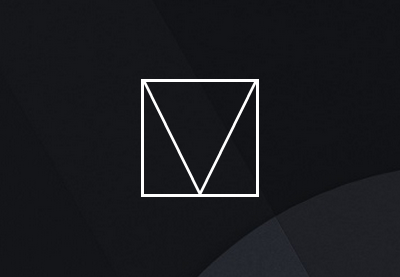

Material Design Lite
Material Design Lite
https://getmdl.io/Material Design Lite lets you add a Material Design look and feel to your websites. It doesn’t rely on any JavaScript frameworks and aims to optimize for cross-device use, gracefully degrade in older browsers, and offer an experience that is immediately accessible. Get started now.
Material Design Lite: O framework do Google
https://tableless.com.brA biblioteca de componentes e templates já conhecida dos aplicativos agora para websites em CSS, HTML e Javascript.